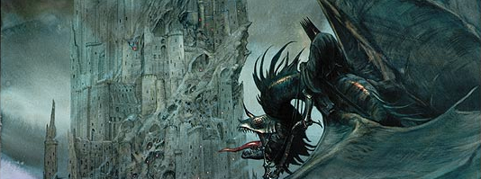

Tolkien, Beethoven, Vision
L'article original est écrit par Ernest Adams publié par Gamasutra (juin 1999).
L'auteur original n'est en aucun cas reponsable de la précision de cette traduction.
Selon le mythe de la création de l'univers fantastique de J.R.R. Tolkien, la terre a été dessinée par la musique. Eru, l’Elu, créa plusieurs esprits appelés les Ainur, qui chantaient devant lui. Mais il y eut des conflits entre les Ainur au sujet de quel thème devait dominer et on en essaya plusieurs. Finalement, Eru arrêta la musique d’une seule et vibrante note, et il révéla aux Ainur ce que leur chant avait fait en réalité – il avait formé une vision de la terre et de toute son histoire. Puis, avec un mot, Eru fit de la vision une réalité.

Le mythe de la création de Tolkien fait inévitablement penser à la Neuvième Symphonie de Beethoven, à tel point que je demande parfois si Tolkien n’a pas été inspiré par celle-ci. La Neuvième Symphonie est composée de cinq mouvements. Dans les trois premiers, l’orchestre explore trois thèmes très différents. Mais dans le quatrième mouvement, une conversation prend place entre les violoncelles, qui sont clairement un professeur, et les violons, qui sont les élèves. L’un après l’autre, les violons commencent à joueur chacun les thèmes des trois premiers mouvements. A chaque fois, les violoncelles les interrompent et désapprouvent vivement. Finalement, les violons introduisent timidement un nouveau thème. Les violoncelles les encouragent et le thème prend de l’ampleur jusqu’à devenir l’éclatant Hymne à la Joie qu’est le cinquième mouvement.
Beethoven était inspiré par une vision (si on peut appeler vision une expérience purement sonore). En fait, il n’a jamais entendu la Neuvième Symphonie, si ce n’est dans sa propre tête. Le temps de l’écrire, il était complètement sourd. Beethoven dirigea lui même l'orchestre lors de la première, sans en entendre la moindre note.
Le travail de Tolkien était aussi l’expression de sa propre vision, qu’il avait en lui depuis qu’il était un jeune homme. Il l’a raffinée avec les années, mais une grande partie des éléments fondamentaux de celle-ci sont restés identiques tout au long de sa vie. A la fin, Tolkien ne se voyait du tout comme « créateur » de ce monde, mais plutôt comme s’il mettait au jour quelque chose qui existait déjà. Quand quelqu’un lui posait une question sur la Terre du Milieu à laquelle il n’avait pas de réponse, il mettait une note dans son journal : « Doit découvrir comment. ». Pas « Doit penser à quelque chose. » ou « Doit créer quelque chose. », mais « Doit découvrir comment. ». Tolkien n’était pas un romancier en train de créer un monde, mais un historien qui se documentait sur celui qu’il pouvait voir dans sa tête.
Cette qualité de la vision est l’une de celles qu'en tant que créatifs nous ignorons à nos risques et périls. Non, nous ne sommes ni des Beethoven ni des Tolkien ; la plupart d’entre nous ne sont pas des génies ; nous produisons un divertissement de masse pour le marché, pas d'extraordinaires chefs-d'oeuvre de la musique ou de la narration. Nous concevons par groupes et non individuellement ; nous travaillons sous la contrainte de délais ; notre but premier est de faire un jeu qui se vende et qui rapporte de l’argent. Les conditions dans lesquelles nous travaillons n’ont rien à voir avec celles dans lesquelles Tolkien ou Beethoven ont travaillé. Mais toute personne créative a besoin d’une vision, une image du travail achevé dans sa tête.
Il est facile de repérer les jeux qui manquent d’une vision. Ils semblent pâles, sans substance, sans l’harmonie dont j’ai parlée dans un article précédent. Parfois, ceci arrive quand il y a deux visions du jeu en compétition parmi les développeurs et que le producteur, de façon à rétablir la paix dans l’équipe, tranche par un mauvais compromis entre celles-ci. Parfois, c’est parce que personne n’a réellement cette vision : l’équipe patauge en essayant de produire quelque chose qu’elle ne comprend pas – ou pire, en laquelle elle ne croit pas.
J’ai souvent entendu le rôle de producteur décrit comme “celui qui garde la vision”. Le producteur peut être le garant de la vision, s’il est aussi le designer, mais souvent le producteur est tellement coincé par des détails administratifs que la vision disparaît. La vision a besoin d’un garant, néanmoins, une personne qui y croit et qui la comprend, qui l’aime et qui peut l’expliquer et la défendre. Dans beaucoup d’entreprises de nos jours, ce n’est pas suffisant pour concevoir un jeu ; il est aussi nécessaire de mettre sur pied une campagne de propagande pour réussir à intéresser les commerciaux et le management. La vision ne doit pas seulement être gardée et nourrie, mais aussi défendue et répandue comme la divine parole. C’est l’un des rôles du game designer de nos jours.
Les visions, néanmoins, ne sont pas créées en tapant sur un clavier d’ordinateur. Les visions naissent de concepts et de connaissances. Elles naissent d’un croisement fertile d’idées. Elles sont le produit de la pensée elle-même. C’est l’une des raisons pour lesquelles ce serait une erreur pour les développeurs en formation de se concentrer uniquement sur l’apprentissage de la programmation ou du graphisme ou de la musique. La programmation, la musique ou la modélisation 3D sont des moyens permettant d’atteindre une fin, mais ce sont seulement des moyens. Avant eux, il doit y avoir une vision, et la vision émerge de la littérature et de l’art, de l’histoire et de l’architecture, de l’observation, et de l’émotion, et de l’expérience, le tout en interaction dans un esprit qui s’intéresse à de telles choses.
Une importante partie du Game Design consiste à être assis et à regarder le mur. C’est la partie la plus difficile, mais aussi la plus gratifiante. C’est aussi le moment où les managers de projets, obsédés par la productivité, sont le moins aptes à comprendre. Oui, vous devez faire des sessions de brainstorming avec l’équipe. Oui, vous devez consulter les gens du marketing. Oui, vous devez écrire des documents de game design. Mais aucune de ces activités ne peut accomplir la partie du processus de design la plus essentielle, c’est la pensée qui le peut. Parfois, il est nécessaire de passer du temps à rester assis, seul, dans un endroit calme, dans une fauteuil confortable, à regarder le mur et à penser. Peut-être avec un carnet et un crayon – mais pas un ordinateur. Un ordinateur empêche de se concentrer, il demande trop d’attention. Il se tient là, en vous présentant son curseur et en faisant tourner son engin 450 MHz, dans l’attente de pouvoir exécuter la moindre tâche que vous pourriez lui donner en quelques millisecondes. Vous lui donnez quelque chose à faire et BOUM ! Il l’exécute en un éclair, avant de revenir à sa position de départ, avec son curseur qui clignote comme le halètement d’un chien trop enthousiaste.
Les visions ne naissent pas de données rapidement traitées. Elles naissent d’une connaissance lentement assimilée. D’une réflexion et de considérations. Récemment, j’ai eu pour tâche de travailler sur un design pour lequel une équipe prototype avait été rassemblée. Trois programmeurs, un artiste, un level designer et un manager de projet étaient là, à attendre ce que j’avais à dire et ils voulaient que je lance n’importe quelle idée folle que je pouvais avoir pour qu’ils puissent se mettre au travail. J’ai trouvé ça assez bizarre. Je savais qu’ils étaient toujours dans l’attente de matière pour pouvoir travailler, je n’avais donc jamais le temps de simplement m’asseoir et de penser au design, de le laisser fermenter dans mon cerveau. C’est un processus qui ne saurait être brusqué.
Je n’ai jamais vraiment cru que la créativité requérait une sorte de qualité spéciale et inexplicable de l’esprit, qui ne serait pas sujet à l’analyse rationnelle et que seuls les artistes possèderaient. C’est une prétention du vingtième siècle en Occident. La plupart des cultures tribales n’ont de mot ni pour « art », ni pour « artiste ». Les gens fabriquent juste des choses. Ce qu’ils fabriquent peut être décoratif, cérémonial, spirituel ou servir à d’autres fins non utilitaires, mais ils ne le placent pas sur un piédestal en appelant ça de l’art.
Les Balinais sont un bon exemple de ceci. A Bali, tout le monde crée des choses tout le temps. Le chauffeur de taxi qui vous emmène de votre hôtel à votre aéroport crée probablement chez lui des choses que nous classifierions comme étant de l’art, mais ils n’ont pas de mot pour « art » parce qu’ils n’en font pas tout un plat. Le concept d’art et d’artiste n’est pas universel. Le désir de créer des choses est universel, mais placer ces choses et leurs créateurs dans une catégorie spéciale appelée art est une caractéristique de cultures extrêmement complexes comme les nôtres.
J’écris ceci car je ne veux pas que l’on pense que je défends cette période de calme dans le processus de design comme une sorte de chose mystique, ou parce que je veux placer la créativité dans le Game Design sur un piédestal. Quand je parle de la vision d’un designer, je ne parle pas d’une vision religieuse ou spirituelle, mais de la simple vision qui se produit dans la tête de toute personne créative, la vision qui est la réponse à la question « A quoi cela ressemblera-t-il, comment cela fonctionnera-t-il, qu’est-ce que cela fera ressentir quand ce sera terminé ? ». Tous les créatifs ont ceci en commun, de Picasso à un type qui fabrique des meubles dans son garage.
Le développement de jeux est un business avec des délais à respecter et de l’argent à rapporter. La plupart du temps, nos actions sont guidées par des considérations purement pratiques. Mais il s’agit quand même d’un processus créatif qui nécessite imagination et inspiration, et celles-ci se font rarement jour dans les réunions. Il y a une période dans le processus de développement où la chose dont un designer a le plus besoin, c'est la solitude.
Ajouter un commentaire
Commentaires

Je ne sais pas qui tu es mais pour moi tu es un génie ;)
Merci cet article vient d'éclairer ma vie ! J'avais déjà compris tout ça il y a des années mais je ne pouvais mettre des mots : c'était juste un ressenti dans tout mon âme : trop de temps passé sur mes créations que je ne pouvais jamais partager alors que l'on m'a toujours dis que c'était parfait je ne trouvais jamais ça assez bien je recherchais la perfection à ma création et pour moi il manquait toujours quelque chose ; tu est trop perfectionniste me disait on !! Mais la vie à fait que j'ai laissé la musique de coté depuis 10ans pour un métier tout aussi passionnant mais dure : coffreur ! Réaliser des bâtiments d'architecte reconnu en tant que petites mains est tout aussi gratifiant et m'a permis de vivre et d'acquérir 1 savoir faire personnel apris sur le tas exactement comme la musique . Mais m'a détourné de ma première passion : la création musicale !!! Il aura fallu 1 accident de travail il y a 2 semaines pour me remettre sur la piste "du grand tout de l'univers" : d'abord revoir ce livre que je voulais acheter il y a quelque temps mais que je n'ai pas acheter ( Laurent Obertone — Guerilla ) et direct après le livre de "Robert Frances : La Perception de la Musique " qui me permis de comprendre énormément de chose juste en lisant les 2 premières pages , la suite c'est the économiste 2020 qui m'a mis sur la piste . Et me voila sur cet page : TOUT S'ECLAIRE !!! mais il est malheureusement trop tard !!!!
So are you trying to say that literally everything is being created by vision? After reading through all the blog this is what I have assumed and I cannot think of a better suggestion. read more I feel I am right.’aint so?
Magnifique article, merci j'ai adoré =)
Ce que dit tolkien est incroyablement vrai ! Je l'ai remarqué à mainte reprise lorsque je m'imagine des histoires ou crée des univers.
L’article me fait penser à une réplique de "Bakuman" un manga qui raconte l'histoire de mangaka (créateur de manga). En effet on y apprend qu'il existe deux types de mangaka (qui peut en fait s'étendre sur de nombreux domaine ) les mangaka réfléchie qui font une étude de marché, regarde la concurrence et utilise des "recettes" connue mais qui marche. Et pit y a les passionnés, qui n'écrivent qu'avec leur inspiration et leur coeur, d’ailleurs les "génies", font toujours partie de la deuxième catégorie. Et l'un de ces génies dit une phrase qui reflète très bien la "vision" de tolkien, "je ne contrôle pas mes personnages, l'intrigue et les personnages bougent tous seul, je ne fais que raconter leur histoires" . Je pense que tolkien à crée l'univers, les personnage principaux, mais qu’après le monde à évolué tout seul, que la graine est devenu un arbre et que tolkien, de temps à autre, cueille une pomme de connaissance de ce monde.
@Yarflam : Je ne suis pas d'accords, je pense pas que des personnes sans esprit créatif existe. Tu dit que quelqu'un qui rêve aura plus de chance de pondre un scénario décent ? C'est vrai et faux en même temps. Les rêves sont l'expression de ton subconscient, qui ne connais aucune règle et qui n'est pas entravé par le raisonnement logique de notre conscience. De ce fait les rêves sont l'incarnation même de notre esprit créatif, mais sans un esprit logique pour ordonner le tout, ton scénario aura l'impression d'avoir été écrit sous extasie. Mais ça montre bien une chose : un esprit libre est un esprit créatif, "Monsieur Tout Le Monde" n'est pas plus bête que les autres et n'as pas un cerveau inférieur aux autres, il est juste bridé par la conformité de la société et par le quotidien. Il suffit de laisser son esprit créatif s'exprimer pour qu'il puisse se développer et évoluer, car oui un esprit créatif s'entraine. Et c'est une capacité qui disparait malheureusement avec l'age, l'esprit d'un enfant est très créatif car il n'as pas encore assimilé et incorporé les " dur loi de la vie" qui vont l'enchainer à la réalité.
Merci d'avoir lu jusque la x) Désolé pour le saignement au yeux mon sens de l'orthographe n'est pas aussi développé que mon esprit créatif so Gomen nasai !!
Très enrichissant !
Bonjour.
"Qu'une personne soit responsable de la vision du jeu dans une équipe de développement, ok. Mais je ne crois pas nécessairement que ce doive être le gamedesigner. Avoir une vision, et être capable de la faire partager requiert pas mal de qualité humaines, que le gamedesigner n'a pas forcément. Un programmeur, un producteur, un artiste peuvent aussi bien faire l'affaire."
C'est pas faux, mais il faut prendre en compte que tout le monde n'a pas un esprit créatif.
Quelqu'un qui rêve, sera plus apte à donner un scénario digne de ce nom. => un designer a déjà cette esprit.
Mais une personne qui s'appelle "Monsieur Tout Le Monde" aura une vision classique : il reprendra les mêmes projets déjà réalisés.
"Monsieur Tout Le Monde" est un cerveau moyen : regarde la télé, naïf, innocent, simple d'esprit…
Évidement on peut progresser, il suffit qu'un jour on se demande "Qui on est ?" et "Monsieur Tout Le Monde" devient "Monsieur X". Là encore, ça suit un état d'esprit. Le producteur n'est pas obligatoirement MTLM…
C'est un excellent article ! Merci beaucoup.
--Yarflam
Juste pour signaler que le monde de Narnia, de C.S.Lewis, qui date du milieu du XXe, est lui aussi créé en musique.
Qu'une personne soit responsable de la vision du jeu dans une équipe de développement, ok. Mais je ne crois pas nécessairement que ce doive être le gamedesigner. Avoir une vision, et être capable de la faire partager requiert pas mal de qualité humaines, que le gamedesigner n'a pas forcément. Un programmeur, un producteur, un artiste peuvent aussi bien faire l'affaire.
--Gaetz